setwd("C:/Users/Vicente/repo/ClimatePanama/ClimatePanamaBook")
library(terra)
library(ggplot2)
library(rasterVis)
library(dplyr)
library(basemaps)
library(sf)
library(gridExtra)
library(scico)
library(tidyr)6 Plots and Figures
6.1 Libraries
We utilize rasterVis, basemaps and gridExtra packages for the figures presented on the paperAuguie and Antonov (2017). The package sf is used for vectors (Pebesma 2018). Finally, scico package its used for color-blind safe palettes (Crameri 2023).
6.2 Figure 1. Sites plot
Read in files
setwd("C:/Users/Vicente/repo/ClimatePanama/ClimatePanamaBook")
ACP_MET<- "../data_ground/met_data/ACP_data/cleanedVV/ACP_met_stations.csv"
STRI_MET<- "../tables/stri_met_stations.csv"
striStation<- read.csv(STRI_MET)
acpStation<- read.csv(ACP_MET)
extentMap <- terra::ext(c(-80.2,-79.4, 8.8, 9.5))Stations wrangling and cleaning
striStation <- striStation %>%
dplyr::mutate(
longitude = as.character(longitude),
longitude = readr::parse_number(longitude)
)
striStation$source<- "STRI"
acpStation$source<-"ACP"
precipitation_data_subset<-read.csv(file="../tables/climatologies.csv")Combine sites data into a single dataset
site<-data.frame(unique(precipitation_data_subset$site))%>%
rename(site=unique.precipitation_data_subset.site.)%>%
left_join(striStation[,c('alias','latitude','longitude','source')], by = c("site" = "alias"))%>%
left_join(acpStation[,c('site','latitude','longitude','source')], by = c("site" = "site"))%>%
mutate(latitude=ifelse(is.na(latitude.x),latitude.y,latitude.x))%>%
mutate(longitude=ifelse(is.na(longitude.x),longitude.y,longitude.x))%>%
mutate(source=ifelse(is.na(source.x),source.y,source.x))%>%
dplyr::select(site,latitude,longitude,source)%>%filter(!is.na(latitude))
site$longitude<- abs(site$longitude)*-1
site_sf <- st_as_sf(site, coords = c("longitude","latitude"), crs = 4326)
site_sf_3857 <- st_transform(site_sf, 3857)
site_coords <- st_coordinates(site_sf_3857)
site_df <- cbind(site, site_coords)Plot using the color blind safe terrain color palette
bbox <- st_bbox(c(xmin = -80.2, xmax = -79.4, ymin = 8.8, ymax = 9.5), crs = st_crs(4326))
bbox_sf <- st_as_sfc(bbox) %>% st_transform(3857)
basemap <- basemap_ggplot(bbox_sf, map_service = "esri", map_type = "world_shaded_relief", map_res= 5) ##max i can go is 5 Loading basemap 'world_shaded_relief' from map service 'esri'...
Using geom_raster() with maxpixels = 4811450.x_labels_4326 <- seq(-80.2, -79.4, by = 0.2)
y_labels_4326 <- seq(8.8, 9.5, by = 0.2)
grid_lines <- expand.grid(lon = x_labels_4326, lat = y_labels_4326) %>%
st_as_sf(coords = c("lon", "lat"), crs = 4326) %>%
st_transform(3857)
coords_3857 <- st_coordinates(grid_lines)
x_breaks_3857 <- unique(coords_3857[ , "X"])
y_breaks_3857 <- unique(coords_3857[ , "Y"])
cb_palette <- c(
"ACP" = "red",
"STRI" = "blue"
)
p <- basemap +
geom_point(data = site_df, aes(x = X, y = Y, color = source), size = 2) + scale_color_manual(values = cb_palette) +
scale_x_continuous(breaks = x_breaks_3857, labels = x_labels_4326, expand= c(0.001,0.001)) + ## error if grid lines expanded by 0,0
scale_y_continuous(breaks = y_breaks_3857, labels = y_labels_4326, expand =c(0.001,0.001)) +
coord_equal()+
theme(
axis.title = element_blank(),
panel.grid = element_blank(),
axis.ticks.length = unit(0.3, "cm"),
axis.text = element_text(size = 10),
panel.background = element_blank()
)
site_df2<- subset(site_df, !site %in% c("BCIELECT", "BCICLEAR", "BALBOAHTS", "DIABLO","ESCANDALOSA","PELUCA"))
BCIELECT<-subset(site_df, site %in% c("BCIELECT"))
BCICLEAR<-subset(site_df, site %in% c("BCICLEAR"))
BALBOAHTS<-subset(site_df, site %in% c("BALBOAHTS"))
DIABLO<-subset(site_df, site %in% c("DIABLO"))
ESCANDALOSA<-subset(site_df, site %in% c("ESCANDALOSA"))
PELUCA<-subset(site_df, site %in% c("PELUCA"))
sites_plot<-p +
geom_text(data = site_df2, aes(x = X, y = Y, label = site), color = "black", size = 2, nudge_y = 1000, fontface = "bold") +
geom_text(data = BCIELECT, aes(x = X, y = Y, label = site), color = "black", size = 2, nudge_x = -3900, fontface = "bold") +
geom_text(data = BCICLEAR, aes(x = X, y = Y, label = site), color = "black", size = 2, nudge_x = 4250, fontface = "bold") +
geom_text(data = BALBOAHTS, aes(x = X, y = Y, label = site), color = "black", size = 2, nudge_y = -1000, fontface = "bold") +
geom_text(data = DIABLO, aes(x = X, y = Y, label = site), color = "black", size = 2, nudge_x = -3000, fontface = "bold") +
geom_text(data = ESCANDALOSA, aes(x = X, y = Y, label = site), color = "black", size = 2, nudge_x = -3000, nudge_y = 1000, fontface = "bold") +
geom_text(data = PELUCA, aes(x = X, y = Y, label = site), color = "black", size = 2, nudge_x = -3000, fontface = "bold") +
labs(color = "Source")
ggsave("sites.tiff", path = "../plots", plot = sites_plot, dpi = 900, units = "in",width = 7.25, height=7.25)
sites_plot6.3 Figure 2. Climatologies
Total annual precipitation, excluding the lowest correlation CHELSA w5e5
annual_pan<-function(list,extent){
b<-terra::rast(list)
c<-terra::app(b,sum)
d<-terra::crop(c,extent)
return(d)
}Stack the climatologies and plot them with the same resolution
# CHELSA 1.2
chelsa_orig<-list.files("../data_reanalysis/CHELSA 1.2/",full.names=TRUE,pattern = ".tif")
chelsa_orig<-annual_pan(chelsa_orig,extentMap)
no_water_mask <- classify(!is.na(chelsa_orig[[1]]), cbind(1, 1), others = NA)
plot(chelsa_orig)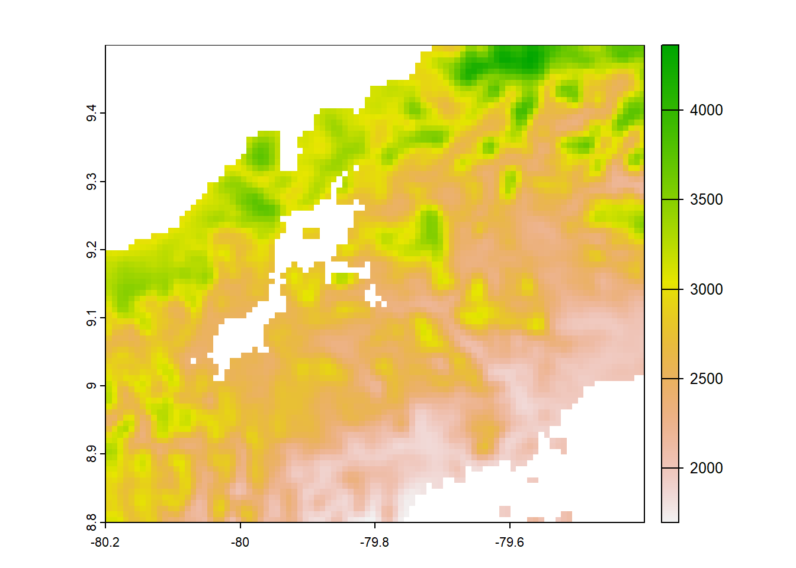
plot(no_water_mask)#CHIRPS annual precip at 0.05
chirps<-list.files("../data_reanalysis/CHIRPS 2.0/climatology",full.name=TRUE,pattern=".tif")
chirps<-annual_pan(chirps,extentMap)
chirps<-terra::project(chirps,chelsa_orig, method='near')
values(chirps)<-ifelse(values(chirps)<0,NA,values(chirps))
plot(chirps)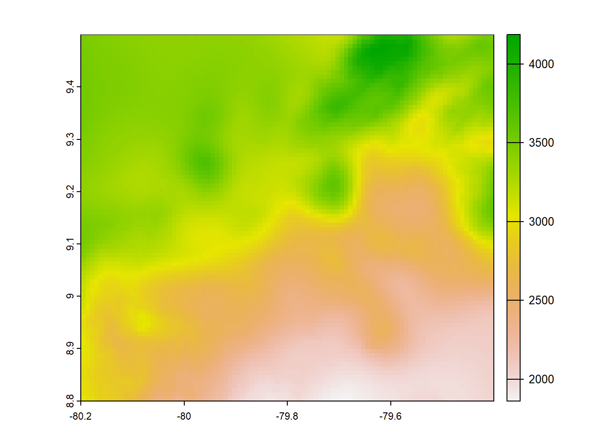
#chelsa 2.1 annual precip 0,0083333 degree orig
chelsa2_orig<-list.files("../data_reanalysis/CHELSA 2.1",full.names=TRUE,pattern = ".tif")
chelsa2_orig<-annual_pan(chelsa2_orig,extentMap)
crs(chelsa2_orig) <- "EPSG:4326"
chelsa2_orig<- chelsa2_orig*no_water_mask
plot(chelsa2_orig)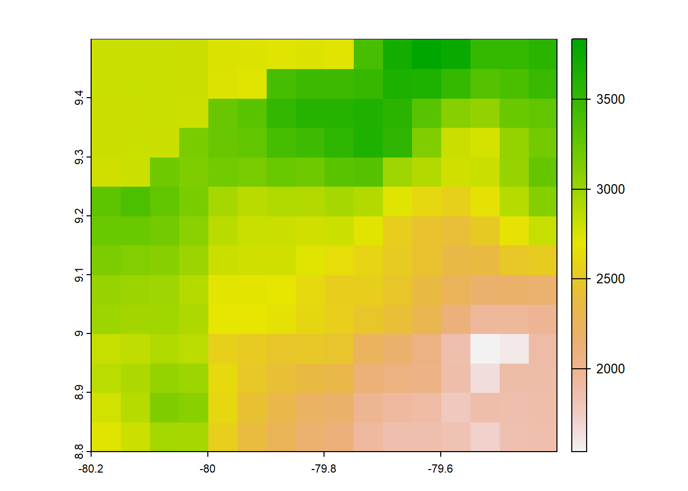
#chp 0.05 degree original 1980-2009
chp<- list.files("../data_reanalysis/CHPclim",full.names=TRUE,pattern = ".tif")
chp<-annual_pan(chp,extentMap)
chp<-terra::project(chp,chelsa_orig, method='near')
chp<- chp*no_water_mask
plot(chp)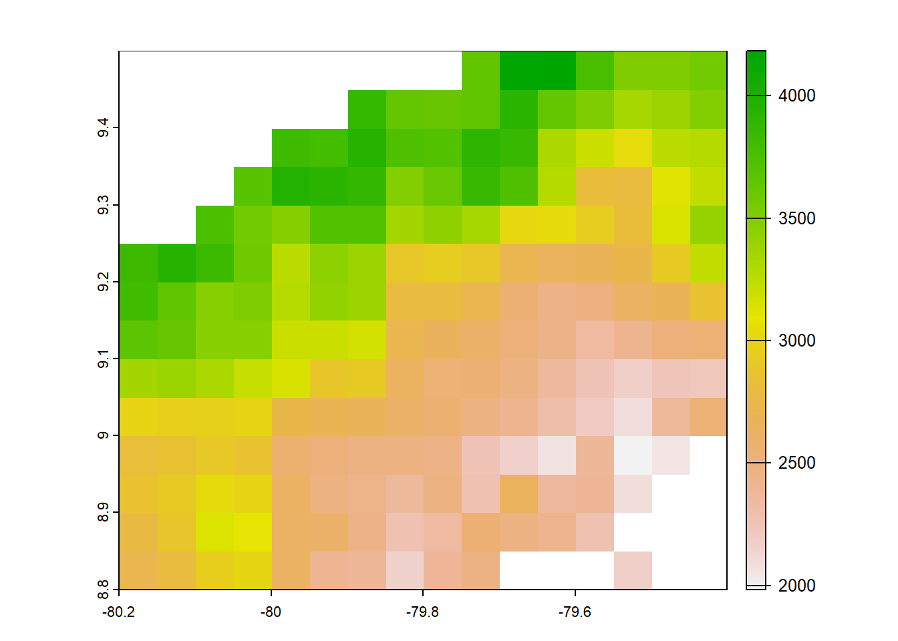
#pbcor 0.05 degree origina
pbcor_chp<- list.files("../data_reanalysis/PBCOR/CHPclim corrected",full.names=TRUE,pattern = ".tif")
pbcor_chp<-annual_pan(pbcor_chp,extentMap)
pbcor_chp<-terra::project(pbcor_chp,chelsa_orig, method='near')
plot(pbcor_chp)#pbcor 0.05 degree original
pbcor_chelsa<- list.files("../data_reanalysis/PBCOR/CHELSA 1.2 corrected",full.names=TRUE)
pbcor_chelsa<-annual_pan(pbcor_chelsa,extentMap)
pbcor_chelsa<-terra::project(pbcor_chelsa,chelsa_orig,method='near')
plot(pbcor_chelsa)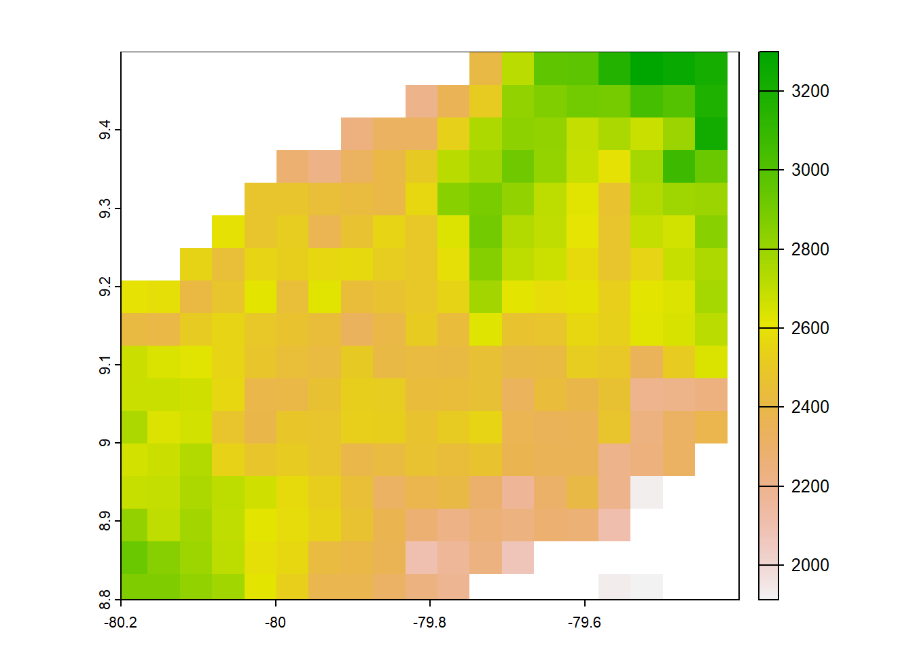
#terra
terra<- list.files("../data_reanalysis/TerraClimate",full.names = TRUE,pattern = "\\.tif$")
terra<-annual_pan(terra,extentMap)
terra<-terra::project(terra,chelsa_orig,method = 'near')
plot(terra)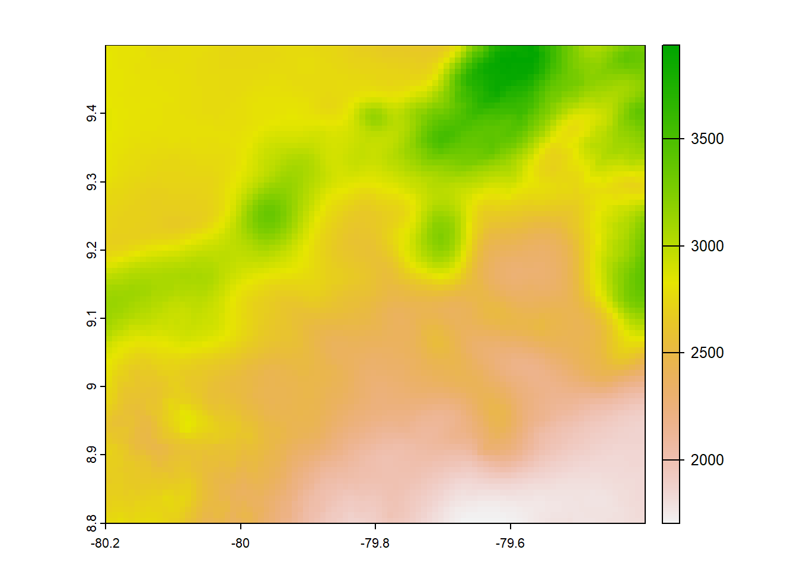
#Chelsa earthenv 2003-2016
chelsaearthenv<-list.files("../data_reanalysis/CHELSA EarthEnv/climatology",full.names = TRUE,pattern = ".tif")
chelsaearthenv<-annual_pan(chelsaearthenv,extentMap)
crs(chelsaearthenv) <- "EPSG:4326"
chelsaearthenv<-chelsaearthenv*no_water_mask
plot(chelsaearthenv)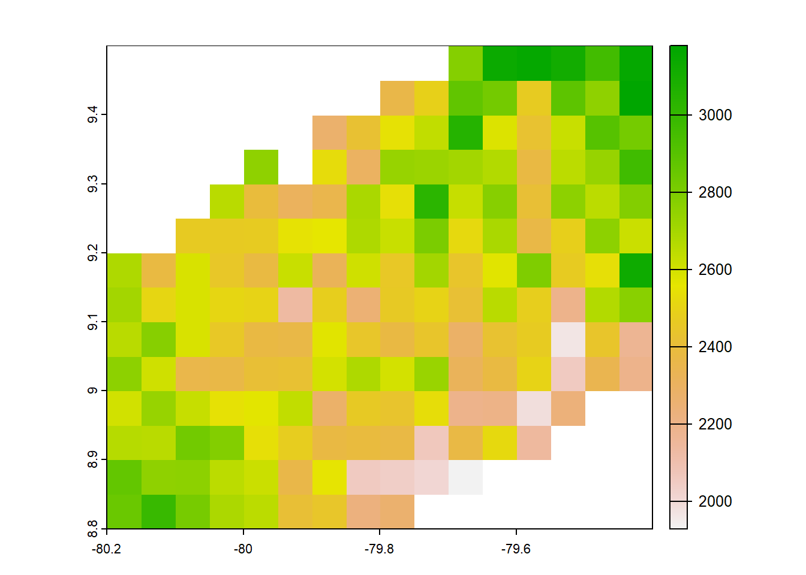
#Pbcorworldclim
pbcor_worldclim<-list.files("../data_reanalysis/PBCOR/WorldClim corrected",full.names = TRUE,pattern = ".tif")
pbcor_worldclim<-annual_pan(pbcor_worldclim,extentMap)
pbcor_worldclim<-terra::project(pbcor_worldclim,chelsa_orig,method="near")
plot(pbcor_worldclim)#worldclim
worldclim<-list.files("../data_reanalysis/WorldClim 2.1",full.names=TRUE,pattern=".tif")
worldclim<-annual_pan(worldclim,extentMap)
plot(worldclim)
Stack the plots, define a list and plot in a grid
res_stack<-c(chelsa_orig,chelsa2_orig,chelsaearthenv,chirps,chp,terra,worldclim,pbcor_chelsa,pbcor_chp,pbcor_worldclim)
models<-list('layer.1'="CHELSA 1.2",
'layer.2'="CHELSA 2.1",
'layer.3'="CHELSA EarthEnv",
'layer.4'="CHIRPS v2.0",
'layer.5'="CHPclim v.1.0",
'layer.6'="TerraClimate",
'layer.7'="WorldClim v2.1",
'layer.8'="PBCOR CHELSA 1.2",
'layer.9'="PBCOR CHPclim",
'layer.10'="PBCOR WorldClim 2.1"
)
model2<- function(variable,value){
return(models[value])
}
jf1<-gplot(res_stack) +
geom_raster(aes(fill = value)) +
facet_wrap(~ variable,labeller=model2,ncol = 5) +
scale_fill_scico(palette = 'roma',na.value="white",name = "mm/year")+
coord_equal()+theme_void()+theme(strip.text.x = element_text(size = 8, colour = "black"))+
labs(title = "Total Annual Precipitation")+
theme(plot.title = element_text(hjust = 0.5,size = 16))
ggsave(path = '../plots',filename = "annual_maps.tiff", units="in", width=10, height=6, dpi=900)
jf1January to April Precipitation individual plots.
# CHELSA 1.2
chelsa_orig<-list.files("../data_reanalysis/CHELSA 1.2/",full.names=TRUE,pattern = ".tif")
chelsa_orig<-chelsa_orig[1:4]
chelsa_orig<-annual_pan(chelsa_orig,extentMap)
plot(chelsa_orig)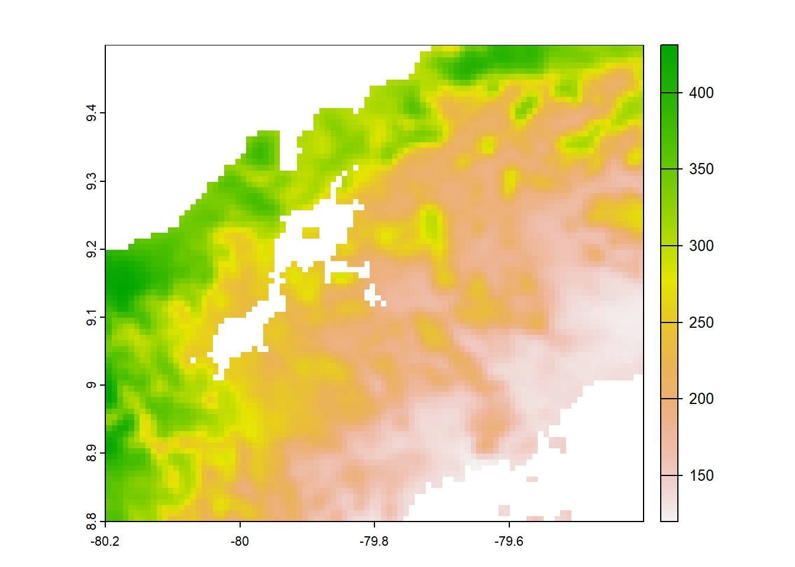
#CHIRPS annual precip at 0.05
chirps<-list.files("../data_reanalysis/CHIRPS 2.0/climatology",full.name=TRUE,pattern=".tif")
chirps<-chirps[1:4]
chirps<-annual_pan(chirps,extentMap)
chirps<-terra::project(chirps,chelsa_orig, method='near')
values(chirps)<-ifelse(values(chirps)<0,NA,values(chirps))
plot(chirps)
#chelsa 2.1 annual precip 0,0083333 degree orig
chelsa2_orig<-list.files("../data_reanalysis/CHELSA 2.1",full.names=TRUE,pattern = ".tif")
chelsa2_orig<- chelsa2_orig[1:4]
chelsa2_orig<-annual_pan(chelsa2_orig,extentMap)
crs(chelsa2_orig) <- "EPSG:4326"
chelsa2_orig<- chelsa2_orig*no_water_mask
plot(chelsa2_orig)#chp 0.05 degree original 1980-2009
chp<- list.files("../data_reanalysis/CHPclim",full.names=TRUE,pattern = ".tif")
chp<- chp[1:4]
chp<-annual_pan(chp,extentMap)
chp<-terra::project(chp,chelsa_orig, method='near')
chp<- chp*no_water_mask
plot(chp)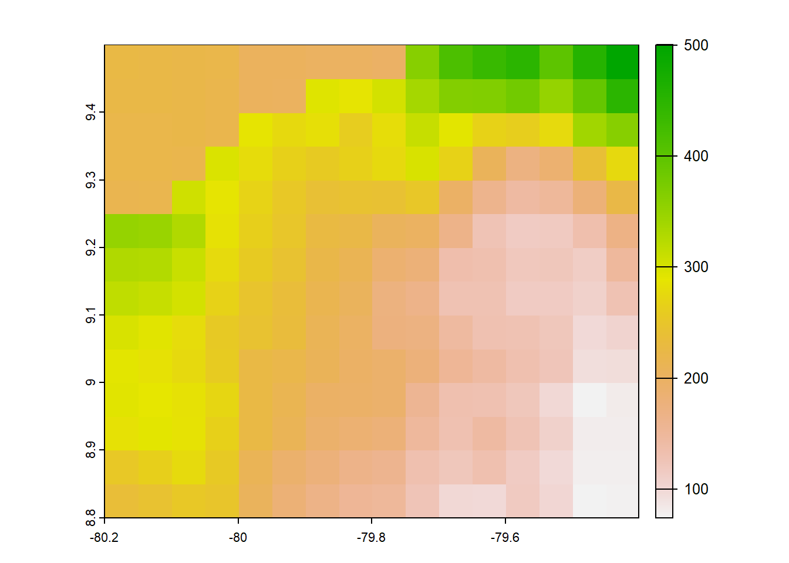
#pbcor 0.05 degree origina
pbcor_chp<- list.files("../data_reanalysis/PBCOR/CHPclim corrected",full.names=TRUE,pattern = ".tif")
pbcor_chp<-pbcor_chp[1:4]
pbcor_chp<-annual_pan(pbcor_chp,extentMap)
pbcor_chp<-terra::project(pbcor_chp,chelsa_orig, method='near')
plot(pbcor_chp)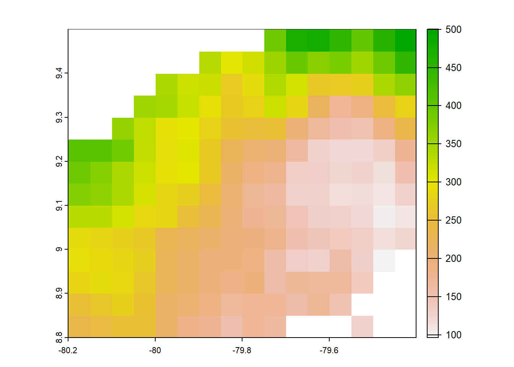
#pbcor 0.05 degree original
pbcor_chelsa<- list.files("../data_reanalysis/PBCOR/CHELSA 1.2 corrected",full.names=TRUE)
pbcor_chelsa<-pbcor_chelsa[1:4]
pbcor_chelsa<-annual_pan(pbcor_chelsa,extentMap)
pbcor_chelsa<-terra::project(pbcor_chelsa,chelsa_orig,method='near')
plot(pbcor_chelsa)#terra
terra<- list.files("../data_reanalysis/TerraClimate",full.names = TRUE,pattern = "\\.tif$")
terra<-terra[1:4]
terra<-annual_pan(terra,extentMap)
terra<-terra::project(terra,chelsa_orig,method = 'near')
plot(terra)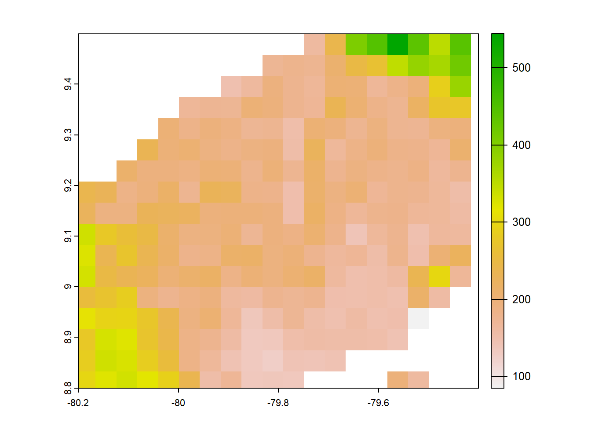
#Chelsa earthenv 2003-2016
chelsaearthenv<-list.files("../data_reanalysis/CHELSA EarthEnv/climatology",full.names = TRUE,pattern = ".tif")
chelsaearthenv<-chelsaearthenv[1:4]
chelsaearthenv<-annual_pan(chelsaearthenv,extentMap)
crs(chelsaearthenv) <- "EPSG:4326"
chelsaearthenv<-chelsaearthenv*no_water_mask
plot(chelsaearthenv)#Pbcorworldclim
pbcor_worldclim<-list.files("../data_reanalysis/PBCOR/WorldClim corrected",full.names = TRUE,pattern = ".tif")
pbcor_worldclim<-pbcor_worldclim[1:4]
pbcor_worldclim<-annual_pan(pbcor_worldclim,extentMap)
pbcor_worldclim<-terra::project(pbcor_worldclim,chelsa_orig,method="ngb")Warning: [project] argument 'method=ngb' is deprecated, it should be
'method=near'plot(pbcor_worldclim)#worldclim
worldclim<-list.files("../data_reanalysis/WorldClim 2.1",full.names=TRUE,pattern=".tif")
worldclim<-worldclim[1:4]
worldclim<-annual_pan(worldclim,extentMap)
plot(worldclim)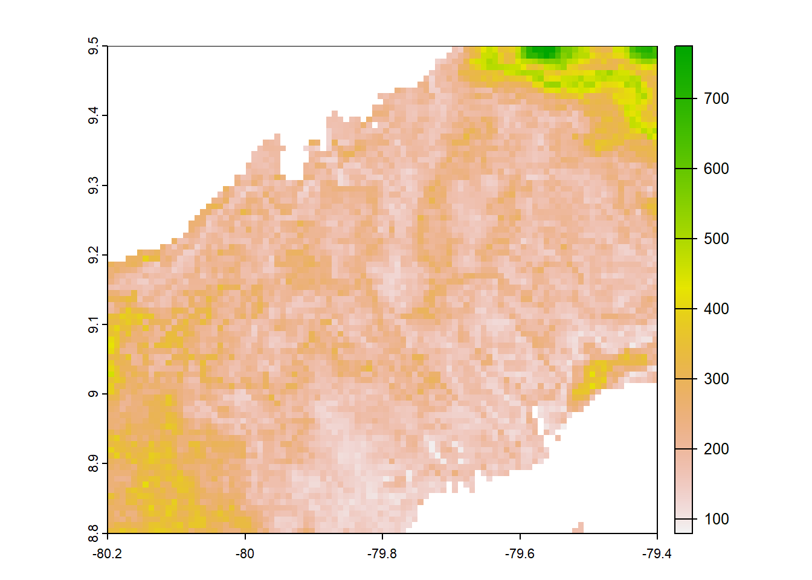
Stack the rasters and plot in a grid.
res_stack_jfma<-c(chelsa_orig,chelsa2_orig,chelsaearthenv,chirps,chp,terra,worldclim,pbcor_chelsa,pbcor_chp,pbcor_worldclim)
models<-list('layer.1'="CHELSA 1.2",
'layer.2'="CHELSA 2.1",
'layer.3'="CHELSA EarthEnv",
'layer.4'="CHIRPS v2.0",
'layer.5'="CHPclim v.1.0",
'layer.6'="TerraClimate",
'layer.7'="WorldClim v2.1",
'layer.8'="PBCOR CHELSA 1.2",
'layer.9'="PBCOR CHPclim",
'layer.10'="PBCOR WorldClim 2.1"
)
model2<- function(variable,value){
return(models[value])
}
jf2<-gplot(res_stack_jfma) +
geom_raster(aes(fill = value)) +
facet_wrap(~ variable,labeller=model2,ncol = 5) +
scale_fill_scico(palette = 'roma',na.value="white",name = "mm")+
coord_equal()+theme_void()+theme(strip.text.x = element_text(size = 8, colour = "black"))+
labs(title = "January to April Precipitation")+
theme(plot.title = element_text(hjust = 0.5,size = 16))
ggsave(path = '../plots',filename = "jfma_maps.tiff", units="in", width=10, height=6, dpi=900)
jf2Arrange both combined plots in a grid.
b<-grid.arrange(jf1,jf2,ncol = 1)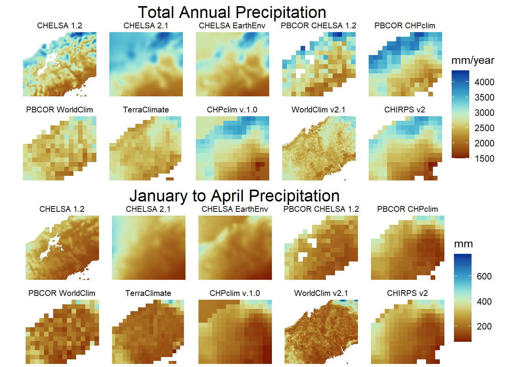
ggsave(b,path='../plots' ,filename = "../plots/climatologies.tiff", units="in", width=8.25, height=6.25, dpi=900)
bTableGrob (2 x 1) "arrange": 2 grobs
z cells name grob
1 1 (1-1,1-1) arrange gtable[layout]
2 2 (2-2,1-1) arrange gtable[layout]6.4 Figure 3. Annual Bias and January to April Bias
Create data frames for bias of each response variable
precipitation_data_subset <- read.csv(file = "../tables/climatologies.csv")
data_sources <- c("CHELSA.1.2", "CHELSA.2.1", "CHELSA.EarthEnv", "CHIRPS.2.0",
"CHPclim", "TerraClimate", "WorldClim.2.1", "CHELSA.W5E5v1.0",
"PBCOR.CHELSA.1.2", "PBCOR.CHPclim", "PBCOR.WorldClim.2.1")
source_names <- c("CHELSA 1.2", "CHELSA 2.1", "CHELSA EarthEnv", "CHPclim", "WorldClim 2.1", "CHIRPS v2.0",
"CHELSA-W5E5v1.0", "TerraClimate", "PBCOR CHELSA 1.2", "PBCOR CHPclim", "PBCOR WorldClim 2.1")
precipitation_data_subset$source <- gsub("CHIRPS 2.0", "CHIRPS v2.0", precipitation_data_subset$source)
bias_frame <- precipitation_data_subset %>%
select(site, longitude, latitude, annual, source) %>%
mutate(bias = NA)
bias_frame_jfma <- precipitation_data_subset %>%
select(site, longitude, latitude, jfma, source) %>%
mutate(bias = NA)
for(i in seq_along(data_sources)) {
bias_frame[bias_frame$source == source_names[i], "bias"] <-
precipitation_data_subset[precipitation_data_subset$source == source_names[i], data_sources[i]] -
precipitation_data_subset[precipitation_data_subset$source == source_names[i], "annual"]
}
jfma_sources <- paste0(data_sources, "_jfma")
for(i in seq_along(jfma_sources)) {
bias_frame_jfma[bias_frame_jfma$source == source_names[i], "bias"] <-
precipitation_data_subset[precipitation_data_subset$source == source_names[i], jfma_sources[i]] -
precipitation_data_subset[precipitation_data_subset$source == source_names[i], "jfma"]
}
bias_frame$source <- factor(bias_frame$source, levels = c("CHELSA 1.2", "CHELSA 2.1", "CHELSA EarthEnv", "CHIRPS v2.0",
"CHPclim", "TerraClimate", "WorldClim 2.1", "CHELSA-W5E5v1.0",
"PBCOR CHELSA 1.2", "PBCOR CHPclim", "PBCOR WorldClim 2.1"))
bias_frame_jfma$source <- factor(bias_frame_jfma$source, levels = c("CHELSA 1.2", "CHELSA 2.1", "CHELSA EarthEnv", "CHIRPS v2.0",
"CHPclim", "TerraClimate", "WorldClim 2.1", "CHELSA-W5E5v1.0",
"PBCOR CHELSA 1.2", "PBCOR CHPclim", "PBCOR WorldClim 2.1"))Convert to other coordinate system for plotting purposes
bias_frame <- bias_frame %>%
st_as_sf(coords = c("longitude","latitude"), crs = 4326) %>%
st_transform(3857) %>%
cbind(st_coordinates(.)) %>%
rename(longitude_3857 = X, latitude_3857 = Y)%>%
filter(source!="CHELSA-W5E5v1.0")
bias_frame_jfma <- bias_frame_jfma %>%
st_as_sf(coords = c("longitude","latitude"), crs = 4326) %>%
st_transform(3857) %>%
cbind(st_coordinates(.)) %>%
rename(longitude_3857 = X, latitude_3857 = Y)%>%
filter(source!="CHELSA-W5E5v1.0")Plot the panels for each response variable.
max_abs_bias <- max(abs(bias_frame$bias), na.rm = TRUE)
Bias_annual_panels <- basemap_ggplot(bbox_sf, map_service = "esri", map_type = "world_shaded_relief", map_res= 2) +
theme_void() +
geom_jitter(data = bias_frame,
aes(x = longitude_3857, y = latitude_3857, colour = bias),
size = 2, width = 0.3, height = 0.3) +
geom_jitter(data = bias_frame,
aes(x = longitude_3857, y = latitude_3857),
size = 2, shape = 21, width = 0.3, height = 0.3) +
scale_color_scico(palette = "roma", direction = -1,
midpoint = 0,
limits = c(-max_abs_bias, max_abs_bias))+
facet_wrap(~source,ncol=5) +
coord_equal()+
labs(color = "Bias (mm)") +
ggtitle("Total Annual Precipitation")+ theme(legend.title = element_text(size = 10))Loading basemap 'world_shaded_relief' from map service 'esri'...
Using geom_raster() with maxpixels = 1202280.max_abs_bias_jfma <- max(abs(bias_frame_jfma$bias), na.rm = TRUE)
Bias_jfma_panels <- basemap_ggplot(bbox_sf, map_service = "esri", map_type = "world_shaded_relief", map_res= 2) +
theme_void() +
geom_jitter(data = bias_frame_jfma,
aes(x = longitude_3857, y = latitude_3857, colour = bias),
size = 2, width = 0.3, height = 0.3) +
geom_jitter(data = bias_frame_jfma,
aes(x = longitude_3857, y = latitude_3857),
size = 2, shape = 21, width = 0.3, height = 0.3) +
scale_color_scico(palette = "roma", direction = -1,
midpoint = 0,
limits = c(-max_abs_bias_jfma, max_abs_bias_jfma)) +
facet_wrap(~source,ncol = 5) +
coord_equal()+
labs(color = "Bias (mm)") +
ggtitle("January to April Precipitation") + theme(legend.title = element_text(size = 10))Loading basemap 'world_shaded_relief' from map service 'esri'...
Using geom_raster() with maxpixels = 1202280.Bias_annual_panels <- Bias_annual_panels +
theme(strip.text = element_text(size = 7),
plot.title = element_text(hjust = 0.5,size=14),
plot.background = element_rect(fill = "white"))
Bias_jfma_panels <- Bias_jfma_panels +
theme(strip.text = element_text(size = 7),
plot.title = element_text(hjust = 0.5,size=14),
plot.background = element_rect(fill = "white"))
#ggsave(Bias_annual_panels,path = '../plots',filename = "annual_bias_maps.tiff", units="in", width=10, height=10, dpi=900)
#ggsave(Bias_jfma_panels,path = '../plots',filename = "jfma_bias_maps.tiff", units="in", width=10, height=10, dpi=900)
#Bias_annual_panels
#Bias_jfma_panelsArrange both set of panels in a grid
c<-grid.arrange(Bias_annual_panels,Bias_jfma_panels,ncol = 1)
ggsave(c,path='../plots' ,filename = "../plots/bias_figure.tiff", units="in", width=9, height=6, dpi=900)
cTableGrob (2 x 1) "arrange": 2 grobs
z cells name grob
1 1 (1-1,1-1) arrange gtable[layout]
2 2 (2-2,1-1) arrange gtable[layout]6.5 Figure 4. Correlation plots
precipitation_data_subset <- read.csv(file="../tables/climatologies.csv")
source_names <- c("CHELSA 1.2", "CHELSA 2.1", "CHELSA EarthEnv", "CHPclim", "WorldClim 2.1", "CHIRPS v2.0",
"CHELSA-W5E5v1.0", "TerraClimate", "PBCOR CHELSA 1.2", "PBCOR CHPclim", "PBCOR WorldClim 2.1")
precipitation_data_subset$source <- gsub("CHIRPS 2.0", "CHIRPS v2.0", precipitation_data_subset$source)
corr_frame <- precipitation_data_subset %>%
select("site","longitude","latitude","annual","source") %>%
mutate(value=NA)
corr_frame_jfma<- precipitation_data_subset %>%
select("site","longitude","latitude","jfma","source") %>%
mutate(value=NA)
for(i in seq_along(data_sources)) {
corr_frame[corr_frame$source == source_names[i], "value"] <- precipitation_data_subset[precipitation_data_subset$source == source_names[i], data_sources[i]]
}
jfma_sources <- paste0(data_sources, "_jfma")
for(i in seq_along(jfma_sources)) {
corr_frame_jfma[corr_frame_jfma$source == source_names[i], "value"] <- precipitation_data_subset[precipitation_data_subset$source == source_names[i], jfma_sources[i]]
}
corr_frame$source <- factor(corr_frame$source, levels = c("CHELSA 1.2","CHELSA 2.1","CHELSA EarthEnv", "CHIRPS v2.0","CHPclim",
"TerraClimate","WorldClim 2.1","CHELSA-W5E5v1.0",
"PBCOR CHELSA 1.2","PBCOR CHPclim","PBCOR WorldClim 2.1"))
corr_frame_jfma$source <- factor(corr_frame_jfma$source, levels = c("CHELSA 1.2","CHELSA 2.1","CHELSA EarthEnv", "CHIRPS v2.0","CHPclim",
"TerraClimate","WorldClim 2.1","CHELSA-W5E5v1.0",
"PBCOR CHELSA 1.2","PBCOR CHPclim","PBCOR WorldClim 2.1"))Plot using ggplot
annual_corr<-ggplot(corr_frame[corr_frame$source!="CHELSA-W5E5v1.0",],aes(x = value,y=annual))+
geom_smooth(method='lm',se=FALSE)+geom_abline(slope = 1, intercept = 0, lty= 2)+
geom_point(col=rgb(0,0,0,alpha=0.5))+facet_wrap(vars(source),ncol=5)+
theme_classic()+
expand_limits(x=c(1000,4500),y=c(1000,4500))+
coord_equal()+
theme(
strip.text = element_text(size = 8)
)
dat_text <- data.frame(
source = unique(corr_frame[corr_frame$source!="CHELSA-W5E5v1.0","source"])
)
for(i in 1:10){
model <- lm(value ~ annual, data = corr_frame[corr_frame$source == dat_text$source[i],])
dat_text$eq[i] <- paste0("y = ", round(coef(model)[1], 2), " + ", round(coef(model)[2], 2), "x")
}
annual_corr<-annual_corr + geom_text(
data = dat_text,
mapping = aes(x = 1800, y = 1300, label = eq),
hjust = 0,
vjust = 1,
size = 2
)+labs(title = "Total Annual Precipitation")+
xlab("Gridded products annual precipitation (mm)") +
ylab("In-situ annual precipitation (mm)")
ggsave(annual_corr,path='../plots' ,filename = "../plots/correlation_annual.tiff", units="in", width=8.25, height=7.25, dpi=900)`geom_smooth()` using formula = 'y ~ x'annual_corr`geom_smooth()` using formula = 'y ~ x'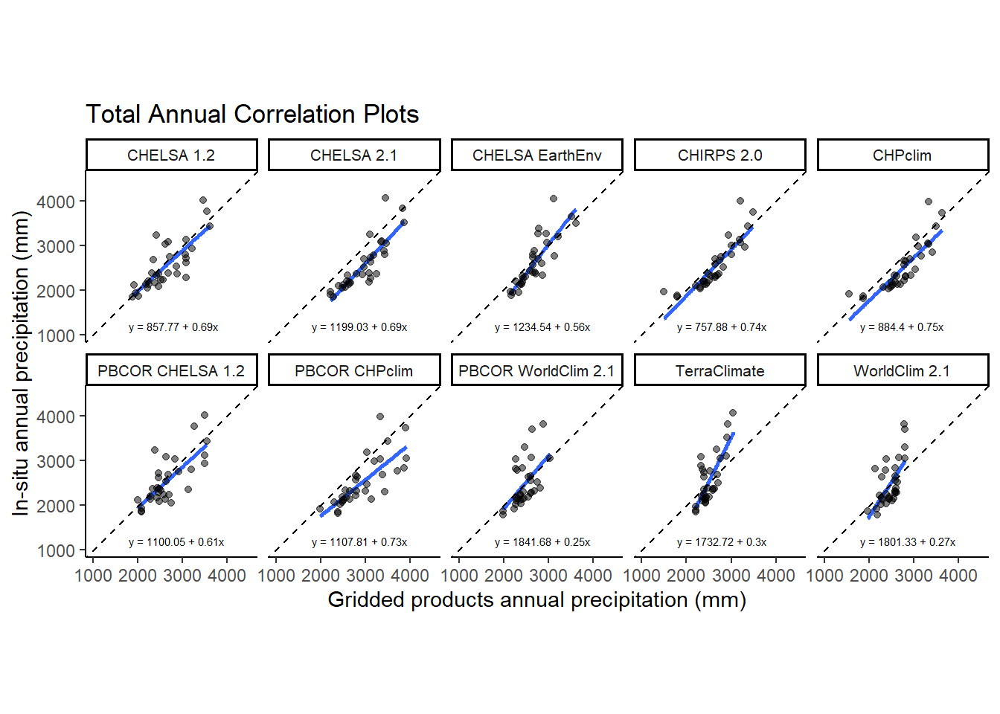
Plot January to April correlation plots
jfma_corr<-ggplot(corr_frame_jfma[corr_frame_jfma$source!="CHELSA-W5E5v1.0",],aes(x = value,y=jfma))+
geom_smooth(method='lm',se=FALSE)+geom_abline(slope = 1, intercept = 0, lty= 2)+
geom_point(col=rgb(0,0,0,alpha=0.5))+facet_wrap(vars(source),ncol=5)+
expand_limits(x=c(0,800),y=c(0,800))+
theme_classic()+
coord_equal()+
theme(
strip.text = element_text(size = 8)
)
dat_text <- data.frame(
source = unique(corr_frame_jfma[corr_frame_jfma$source!="CHELSA-W5E5v1.0","source"])
)
for(i in 1:10){
model <- lm(value ~ jfma, data = corr_frame_jfma[corr_frame_jfma$source == dat_text$source[i],])
dat_text$eq[i] <- paste0("y = ", round(coef(model)[1], 2), " + ", round(coef(model)[2], 2), "x")
}
jfma_corr<-jfma_corr + geom_text(
data = dat_text,
mapping = aes(x = 350, y = 50, label = eq),
hjust = 0,
vjust = 1,
size = 2
)+labs(title = "January to April Precipitation")+
xlab("Gridded products Jan-Apr precipitation (mm)") +
ylab("In-situ Jan-Apr precipitation (mm)")
ggsave(jfma_corr,path='../plots' ,filename = "../plots/correlation_jfma.tiff", units="in", width=8, height=7, dpi=900)`geom_smooth()` using formula = 'y ~ x'jfma_corr`geom_smooth()` using formula = 'y ~ x'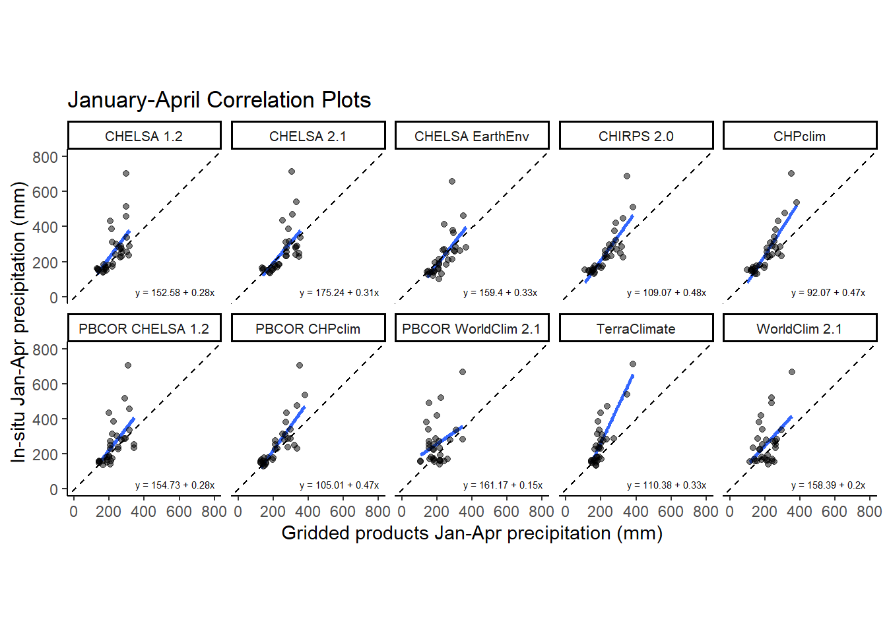
Arrange both correlation panels in a grid
d<-grid.arrange(annual_corr,jfma_corr,ncol = 1)`geom_smooth()` using formula = 'y ~ x'
`geom_smooth()` using formula = 'y ~ x'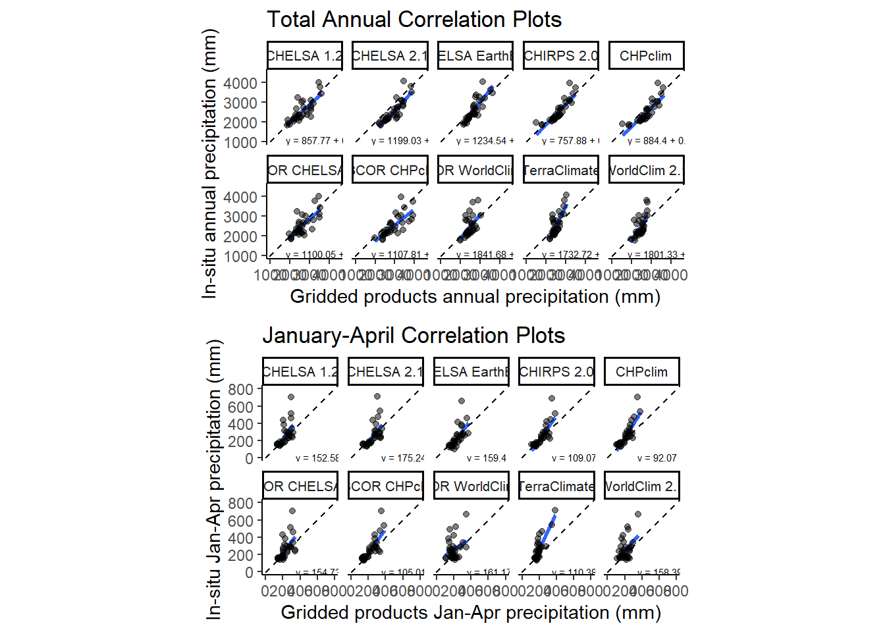
ggsave(d,path='../plots' ,filename = "../plots/correlation.tiff", units="in", width=7.5, height=7.5, dpi=900)6.6 Figure.5 Seasonality plots
Mutating the data is necessary to consider a second line representing a second set of ground data in BCI.
acp38_ag <- read.csv("../tables/acp38_ag.csv")
acp38_ag$dataset_name <- gsub("CHIRPS 2.0", "CHIRPS v2.0", acp38_ag$dataset_name)
acp38_ag_long <- acp38_ag %>%
tidyr::pivot_longer(
cols = c(CHELSA1.2, CHELSA2.1, CHELSA_EarthEnv, CHELSAW5E5v1.0,
CHIRPS2.0, CHPclim, TerraClimate, WorldClim2.1,
PBCOR_CHELSA1.2, PBCOR_CHPclim, PBCOR_WorldClim2.1),
names_to = "colname",
values_to = "value"
) %>%
mutate(colname = case_when(
colname == "CHELSA1.2" ~ "CHELSA 1.2",
colname == "CHELSA2.1" ~ "CHELSA 2.1",
colname == "CHELSA_EarthEnv" ~ "CHELSA EarthEnv",
colname == "CHPclim" ~ "CHPclim",
colname == "WorldClim2.1" ~ "WorldClim 2.1",
colname == "CHIRPS2.0" ~ "CHIRPS v2.0", # Match this AFTER pivot
colname == "CHELSAW5E5v1.0" ~ "CHELSA-W5E5v1.0",
colname == "TerraClimate" ~ "TerraClimate",
colname == "PBCOR_CHELSA1.2" ~ "PBCOR CHELSA 1.2",
colname == "PBCOR_CHPclim" ~ "PBCOR CHPclim",
colname == "PBCOR_WorldClim2.1" ~ "PBCOR WorldClim 2.1"
)) %>%
filter((dataset_name == colname) | (dataset_name == "Ground" & colname == "CHELSA 1.2")) %>%
mutate(value = ifelse(dataset_name == "Ground", mon_mean, value)) %>%
mutate(dataset_name = ifelse(site == "BCICLEAR" & dataset_name == "Ground", "Ground manual", dataset_name)) %>%
filter(!(site == "BCICLEAR" & dataset_name != "Ground manual")) %>%
mutate(site = ifelse(site == "BCICLEAR", "BCI", site))
year<- acp38_ag_long %>% filter(dataset_name=="Ground")%>%
group_by(site) %>% summarise(annual_mean=sum(value,na.rm=TRUE))
acp38_ag_long$dataset_name <- factor(acp38_ag_long$dataset_name, levels = c("CHELSA 1.2","CHELSA 2.1","CHELSA EarthEnv","CHELSA-W5E5v1.0",
"CHIRPS v2.0","CHPclim", "TerraClimate","WorldClim 2.1",
"PBCOR CHELSA 1.2","PBCOR CHPclim","PBCOR WorldClim 2.1","Ground",
"Ground manual"))
unique(acp38_ag_long$dataset_name) [1] CHELSA 1.2 CHELSA 2.1 CHELSA EarthEnv
[4] CHPclim WorldClim 2.1 CHIRPS v2.0
[7] CHELSA-W5E5v1.0 TerraClimate PBCOR CHELSA 1.2
[10] PBCOR CHPclim PBCOR WorldClim 2.1 Ground
[13] Ground manual
13 Levels: CHELSA 1.2 CHELSA 2.1 CHELSA EarthEnv ... Ground manualsite_labels <- setNames(
paste0(
year$site, " (", round(year$annual_mean, 0), " mm/yr)"
),
year$site
)
acp38_ag_long$site <- factor(acp38_ag_long$site, # Reordering group factor levels
levels = c("SANMIGUEL", "AGUACLARA", "PELUCA", "BCI","GUACHA","CASCADAS","GAMBOA","PEDROMIGUEL"))Plot using ggplot2 and customs colors
seasonality_plot <- ggplot(acp38_ag_long, aes(x = Month, y = value)) +
geom_line(aes(color = dataset_name, linewidth = dataset_name)) +
geom_point(aes(color = dataset_name), size = 0.2) +
facet_wrap(
vars(site),
ncol = 4,
labeller = labeller(site = site_labels)
) +
scale_color_manual(
labels = c(
"CHELSA 1.2", "CHELSA 2.1", "CHELSA EarthEnv", "CHELSA-W5E5v1.0",
"CHIRPS v2.0", "CHPclim", "TerraClimate", "WorldClim 2.1",
"PBCOR CHELSA 1.2", "PBCOR CHPclim", "PBCOR WorldClim 2.1",
"Ground", "Ground manual"
),
values = c(
'#1f78b4', '#b2df8a', '#33a02c', '#fb9a99', '#e31a1c', '#fdbf6f',
'#ff7f00', '#cab2d6', '#6a3d9a', '#a6cee3', 'brown', "black", "purple"
)
) +
scale_discrete_manual(
"linewidth",
values = c(0.2, 0.2, 0.2, 0.2, 0.2, 0.2, 0.2, 0.2, 0.2, 0.2, 0.2, 0.5, 0.5)
) +
scale_x_continuous(
breaks = 1:12,
labels = c("Jan", "Feb", "Mar", "Apr", "May", "Jun",
"Jul", "Aug", "Sep", "Oct", "Nov", "Dec")
) +
theme_classic() +
theme(
axis.text.x = element_text(angle = 60, vjust = 1.2, hjust = 1, size = 7),
strip.text = element_text(size = 6),
axis.text.y = element_text(size = 7),
axis.title.x = element_text(size = 8),
axis.title.y = element_text(size = 8),
legend.text = element_text(size = 7),
legend.title = element_text(size = 8)
) +
ylab("Monthly Precipitation (mm)") +
labs(
color = "Gridded dataset"
) +
guides(linewidth = "none")
ggsave(seasonality_plot,path='../plots' ,filename = "../plots/seasonality.tiff", units="in", width=7.25, height=5, dpi=900)
seasonality_plot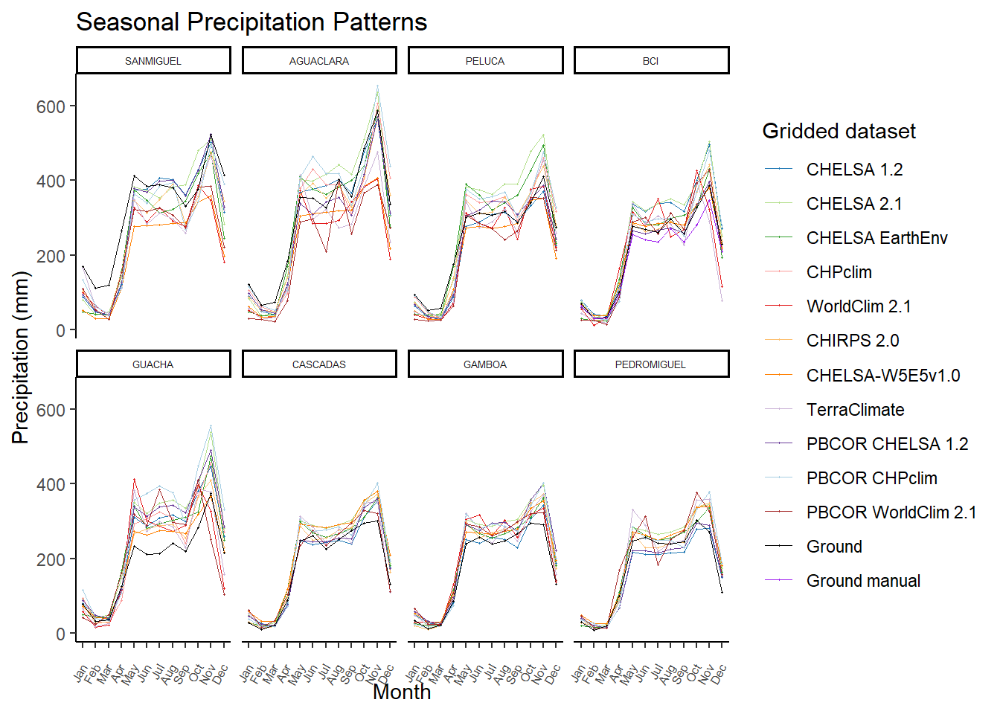
6.7 Figure 6. Interannual variability
Mutating the dataset to consider the existence of a second line representing another set of ground data coming from a secondary rain gauge in BCI.
acp38_year<-read.csv("../tables/acp38_year.csv")
acp38_year$dataset_name <- gsub("CHIRPS 2.0", "CHIRPS v2.0", acp38_year$dataset_name)
acp38_year_long<- acp38_year%>%
tidyr::pivot_longer(cols=c(annual_precip,CHELSA1.2:TerraClimate), names_to = "colname", values_to = "value")%>%
mutate(colname = case_when(
colname == "CHELSA1.2" ~ "CHELSA 1.2",
colname == "CHELSA2.1" ~ "CHELSA 2.1",
colname == "CHELSA_EarthEnv" ~ "CHELSA EarthEnv",
colname == "CHIRPS2.0" ~ "CHIRPS v2.0",
colname == "CHELSAW5E5v1.0" ~ "CHELSA-W5E5v1.0",
colname == "TerraClimate" ~ "TerraClimate",
colname == "annual_precip" ~ "Ground"
))%>%
filter((dataset_name == colname) | (dataset_name == "CHELSA 1.2" & colname == "Ground"))%>%
mutate(dataset_name= ifelse(dataset_name == "CHELSA 1.2" & colname == "Ground"& site=="BCICLEAR","Ground manual",dataset_name))%>%
filter(!(site == "BCICLEAR" & dataset_name != "Ground manual"))%>%
mutate(site=ifelse(site=="BCICLEAR","BCI",site))%>%
mutate(dataset_name=ifelse(dataset_name=="CHELSA 1.2"&colname=="Ground","Ground",dataset_name))
year<- acp38_year_long %>% filter(dataset_name=="Ground")%>%
group_by(site) %>% summarise(annual_mean=mean(value,na.rm=TRUE))
acp38_year_long$site <- factor(acp38_year_long$site, # Reordering group factor levels
levels = c("SANMIGUEL", "AGUACLARA", "PELUCA", "BCI","GUACHA","CASCADAS","GAMBOA","PEDROMIGUEL"))
site_labels <- setNames(
paste0(
year$site, " (", round(year$annual_mean, 0), " mm/yr)"
),
year$site
)
acp38_year_long$dataset_name<-factor(acp38_year_long$dataset_name,
levels=c("CHELSA 1.2","CHELSA 2.1", "CHELSA EarthEnv","CHELSA-W5E5v1.0","CHIRPS v2.0","TerraClimate","Ground","Ground manual"))
acp38_year_long <- acp38_year_long %>%
filter(!is.na(dataset_name))Plot using ggplot2
interannual_plot <- ggplot(acp38_year_long, aes(x = Year, y = value)) +
geom_line(aes(color = dataset_name, linewidth= dataset_name))+
geom_point(aes(color = dataset_name), size = 0.2) +
expand_limits(x = c(1970, 2016), y = c(900, 5900)) +
facet_wrap(vars(site), ncol = 4, labeller = labeller(site = site_labels)) +
theme_classic() +
xlab("Year") +
ylab("Annual Precipitation (mm)") +
labs(color = "Gridded dataset") +
theme(
strip.text = element_text(size = 7),
axis.text.x = element_text(size = 7),
axis.text.y = element_text(size = 7),
axis.title.x = element_text(size = 8),
axis.title.y = element_text(size = 8),
legend.text = element_text(size = 7),
legend.title = element_text(size = 8)
) +
scale_color_manual(values = c(
"CHELSA 1.2" = "#a65628",
"CHELSA 2.1" = "#e7298a",
"CHELSA EarthEnv" = "#e31a1c",
"CHIRPS v2.0" = "#ff7f00",
"CHELSA-W5E5v1.0" = "#984ea3",
"TerraClimate" = "#4daf4a",
"Ground" = "black",
"Ground manual" = "purple"
)) +
scale_discrete_manual("linewidth",values = c(0.2, 0.2, 0.2, 0.2, 0.2, 0.2, 0.5, 0.5))+
guides(linewidth = "none")
##annual
ggsave(interannual_plot,path='../plots' ,filename = "../plots/interannual.tiff", units="in", width=8.25, height=4, dpi=900)Warning: Removed 77 rows containing missing values or values outside the scale range
(`geom_line()`).Warning: Removed 618 rows containing missing values or values outside the scale range
(`geom_point()`).interannual_plotWarning: Removed 77 rows containing missing values or values outside the scale range
(`geom_line()`).
Removed 618 rows containing missing values or values outside the scale range
(`geom_point()`).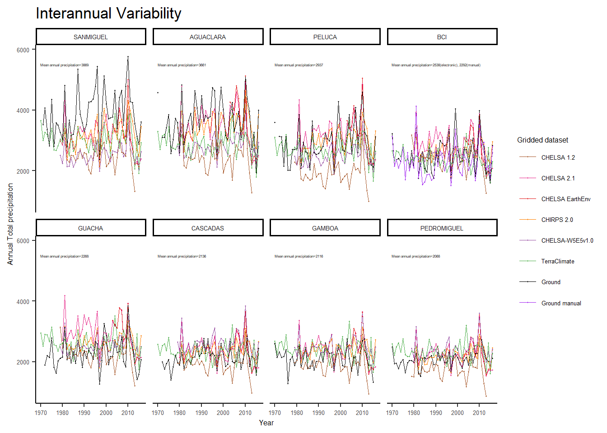